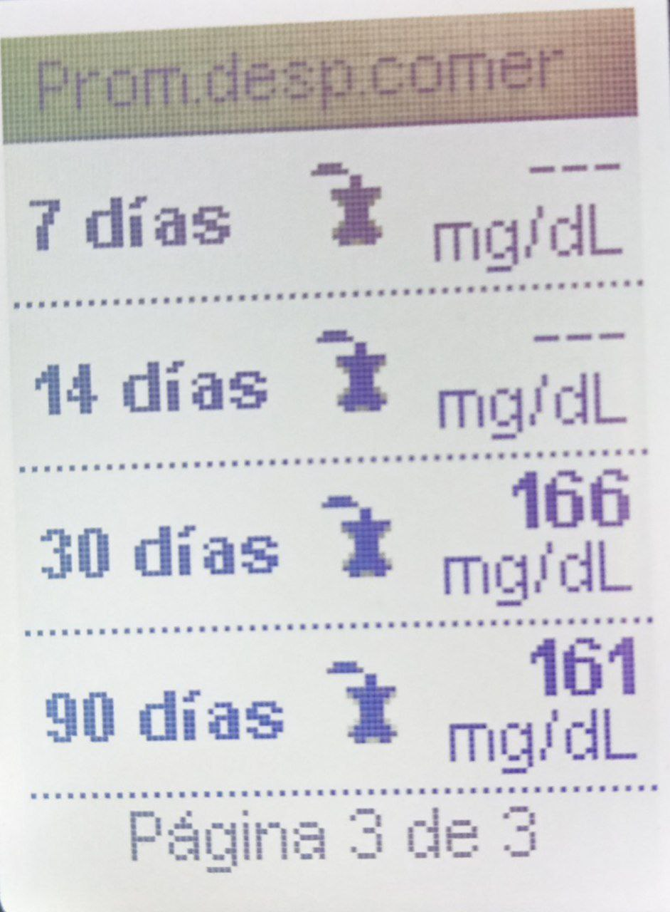

Glucosa mes de agosto
Glucemia Diaria:
01/08/2023 /Antes De Desayunar / 111 mg/dl / 09:47 pm
02/08/2023 /Antes De Desayunar / 114 mg/dl / 09:48 pm
03/08/2023 /Antes De Desayunar / 113 mg/dl / 09:50 pm
04/08/2023 /Antes De Desayunar / 111 mg/dl / 10:00 pm
05/08/2023 /Antes De Desayunar / 147 mg/dl / 09:38 pm
06/08/2023 /Antes De Desayunar / 105 mg/dl / 10:01 pm
07/08/2023 /Antes De Desayunar / 120 mg/dl / 10:10 pm
08/08/2023 /Antes De Desayunar / 131 mg/dl / 09:56 pm
09/08/2023 /Antes De Desayunar / 116 mg/dl / 09:03 pm
10/08/2023 /Antes De Desayunar / 121 mg/dl / 09:35 pm
10/08/2023 /Antes De Cenar / 145 mg/dl / 00:23 pm
11/08/2023 /Antes De Desayunar / 134 mg/dl / 09:49 pm
12/08/2023 /Antes De Desayunar / 129 mg/dl / 09:02 pm
13/08/2023 /Antes De Desayunar / 114 mg/dl / 09:33 pm
14/08/2023 /Antes De Desayunar / 105 mg/dl / 09:01 pm
15/08/2023 /Antes De Desayunar / 126 mg/dl / 10:22 pm
16/08/2023 /Antes De Desayunar / 130 mg/dl / 08:46 pm
17/08/2023 /Antes De Desayunar / 124 mg/dl / 09:33 pm
18/08/2023 /Antes De Desayunar / 169 mg/dl / 10:07 pm
19/08/2023 /Antes De Desayunar / 121 mg/dl / 09:41 pm
20/08/2023 /Antes De Desayunar / 130 mg/dl / 09:48 pm
21/08/2023 /Antes De Desayunar / 115 mg/dl / 09:46 pm
22/08/2023 /Antes De Desayunar / 122 mg/dl / 08:23 pm
23/08/2023 /Antes De Desayunar / 135 mg/dl / 08:25 pm
23/08/2023 /Antes De Cenar / 105 mg/dl / 21:59 pm
24/08/2023 /Antes De Desayunar / 127 mg/dl / 09:28 pm
Deporte Diario:
00/08/2023 / Despues De Comer / 00:00 pm / 30min Cinta de Correr
Promedio Mensual:
